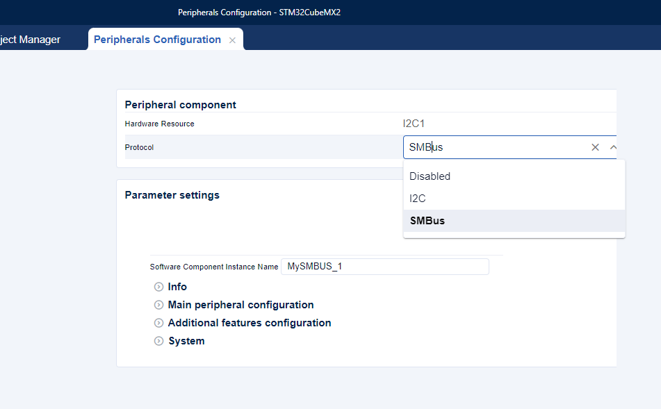
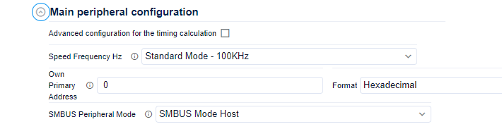
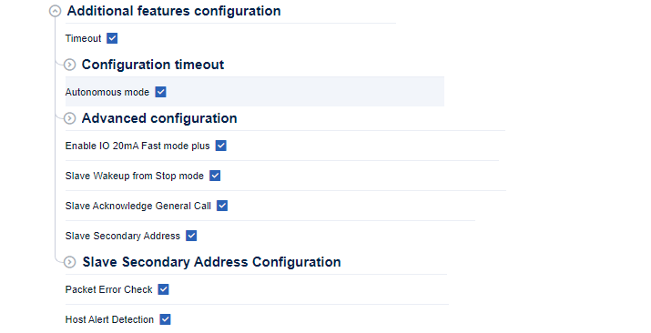
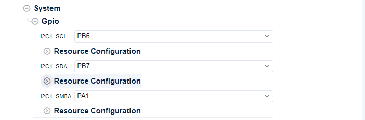
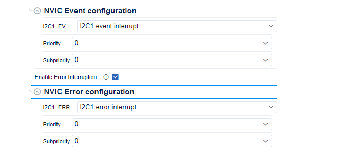
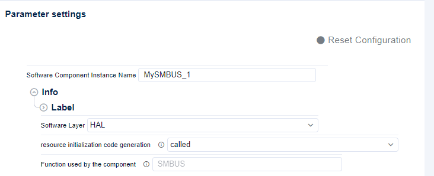

HAL SMBUS initialization and configuration functions migration ¶
The goal of this page is to show how to migrate the Init sequence using STM32CubeMX2 :
-
Open STM32CubeMX2 SMBUS configuration panel
-
Configure the SMBUS
-
Configure the additional features of the SMBUS if needed
-
Configure the GPIOs needed by the SMBUS
-
Configure the NVIC if the application requires the SMBUS interrupts
-
Configure the SW layer HAL/LL
-
Generate the code
Note
The configuration below might varies from a series to another.
SMBUS configuration settings ¶
-
Open STM32CubeMX2 SMBUS configuration panel
-
Configure the SMBUS


Clock timing configuration for SMBUS ¶
-
Configure the SMBUS clock timing


Additional features and secondary address configuration for SMBUS ¶
-
Configure the additional features of the SMBUS if needed


GPIO configuration for SMBUS ¶
-
Configure the GPIOs needed by the SMBUS


NVIC configuration for SMBUS ¶
-
Configure the NVIC if the application requires the SMBUS interrupts


Software layer and resource initialization configuration ¶
-
Configure the SW layer HAL/LL


Generated SMBUS initialization sequence ¶
-
Generate the code
-
The SMBUS initialisation sequence is generated in the mx_smbus_hal_init function in mx_smbus.c file under
$YOUR_PORJECT_NAME$/$YOUR_PORJECT_NAME$_SW/generated/STM32Cube_CodeGen. -
No Msp Callback in HAL2.
Note
Related concept :
|
Topic |
Code Snippet HAL1 |
Code Snippet HAL2 |
|---|---|---|
|
Handle declaration |
SMBUS_HandleTypeDef hsmbus;
|
static hal_smbus_handle_t hsmbus;
|
|
Init, config and Msp sequence function |
static void MX_I2C1_SMBUS_Init(void)
{
/* USER CODE BEGIN I2C1_Init 0 */
/* USER CODE END I2C1_Init 0 */
SMBUS_AutonomousModeConfTypeDef sConfigI2C1 = {0};
/* USER CODE BEGIN I2C1_Init 1 */
/* USER CODE END I2C1_Init 1 */
hsmbus.Instance = I2C1;
hsmbus.Init.Timing = 0x80D25052;
hsmbus.Init.AnalogFilter = SMBUS_ANALOGFILTER_ENABLE;
hsmbus.Init.OwnAddress1 = 0 << 1U;
hsmbus.Init.AddressingMode = SMBUS_ADDRESSINGMODE_7BIT;
hsmbus.Init.DualAddressMode = SMBUS_DUALADDRESS_ENABLE;
hsmbus.Init.OwnAddress2 = 0xFF;
hsmbus.Init.OwnAddress2Masks = SMBUS_OA2_NOMASK;
hsmbus.Init.GeneralCallMode = SMBUS_GENERALCALL_DISABLE;
hsmbus.Init.NoStretchMode = SMBUS_NOSTRETCH_DISABLE;
hsmbus.Init.PacketErrorCheckMode = SMBUS_PEC_DISABLE;
hsmbus.Init.PeripheralMode = SMBUS_PERIPHERAL_MODE_SMBUS_HOST;
hsmbus.Init.SMBusTimeout = 0x00008493;
if (HAL_SMBUS_Init(&hsmbus) != HAL_OK)
{
Error_Handler();
}
/* Configure Autonomous Mode*/
sConfigI2C1.TriggerState = SMBUS_AUTO_MODE_ENABLE;
sConfigI2C1.TriggerSelection = SMBUS_GRP1_EXTI5_TRG;
sConfigI2C1.TriggerPolarity = SMBUS_TRIG_POLARITY_RISING;
if (HAL_SMBUSEx_SetConfigAutonomousMode(&hsmbus, &sConfigI2C1) != HAL_OK)
{
Error_Handler();
}
/* USER CODE BEGIN I2C1_Init 2 */
/* USER CODE END I2C1_Init 2 */
}
void HAL_SMBUS_MspInit(SMBUS_HandleTypeDef* hsmbus)
{
GPIO_InitTypeDef GPIO_InitStruct = {0};
RCC_PeriphCLKInitTypeDef PeriphClkInit = {0};
if(hsmbus->Instance==I2C1)
{
/* USER CODE BEGIN I2C1_MspInit 0 */
/* USER CODE END I2C1_MspInit 0 */
/** Initializes the peripherals clock
*/
PeriphClkInit.PeriphClockSelection = RCC_PERIPHCLK_I2C1;
PeriphClkInit.I2C1ClockSelection = RCC_I2C1CLKSOURCE_PCLK1;
if (HAL_RCCEx_PeriphCLKConfig(&PeriphClkInit) != HAL_OK)
{
Error_Handler();
}
__HAL_RCC_GPIOB_CLK_ENABLE();
__HAL_RCC_GPIOA_CLK_ENABLE();
/**I2C1 GPIO Configuration
PB6 ------> I2C1_SCL
PB7 ------> I2C1_SDA
PA1 ------> I2C1_SMBA
*/
GPIO_InitStruct.Pin = GPIO_PIN_6;
GPIO_InitStruct.Mode = GPIO_MODE_AF_OD;
GPIO_InitStruct.Pull = GPIO_NOPULL;
GPIO_InitStruct.Speed = GPIO_SPEED_FREQ_LOW;
GPIO_InitStruct.Alternate = GPIO_AF4_I2C1;
HAL_GPIO_Init(GPIOB, &GPIO_InitStruct);
GPIO_InitStruct.Pin = GPIO_PIN_7;
GPIO_InitStruct.Mode = GPIO_MODE_AF_OD;
GPIO_InitStruct.Pull = GPIO_NOPULL;
GPIO_InitStruct.Speed = GPIO_SPEED_FREQ_LOW;
GPIO_InitStruct.Alternate = GPIO_AF4_I2C1;
HAL_GPIO_Init(GPIOB, &GPIO_InitStruct);
GPIO_InitStruct.Pin = GPIO_PIN_1;
GPIO_InitStruct.Mode = GPIO_MODE_AF_OD;
GPIO_InitStruct.Pull = GPIO_NOPULL;
GPIO_InitStruct.Speed = GPIO_SPEED_FREQ_LOW;
GPIO_InitStruct.Alternate = GPIO_AF4_I2C1;
HAL_GPIO_Init(GPIOA, &GPIO_InitStruct);
/* Peripheral clock enable */
__HAL_RCC_I2C1_CLK_ENABLE();
/* I2C1 interrupt Init */
HAL_NVIC_SetPriority(I2C1_EV_IRQn, 0, 0);
HAL_NVIC_EnableIRQ(I2C1_EV_IRQn);
HAL_NVIC_SetPriority(I2C1_ER_IRQn, 0, 0);
HAL_NVIC_EnableIRQ(I2C1_ER_IRQn);
/* USER CODE BEGIN I2C1_MspInit 1 */
/* USER CODE END I2C1_MspInit 1 */
}
}
|
hal_smbus_handle_t *mx_i2c1_hal_smbus_init(void)
{
hal_smbus_config_t smbus_config;
if (HAL_SMBUS_Init(&hsmbus, HAL_SMBUS1) != HAL_OK)
{
return NULL;
}
HAL_RCC_I2C1_EnableClock();
/*
Timing automatically calculated with:
- I2C1 input clock at 160000000 Hz
- I2C clock speed at 100000 Hz
*/
smbus_config.timing = 0x80D25052;
smbus_config.own_address1 = 0 << 1U;
smbus_config.device_mode = HAL_SMBUS_PERIPHERAL_MODE_HOST;
if (HAL_SMBUS_SetConfig(&hsmbus, &smbus_config) != HAL_OK)
{
return NULL;
}
/* Default value set for digital filter */
/* HAL_SMBUS_SetDigitalFilter(&hsmbus, 0); */
HAL_SMBUS_EnableAnalogFilter(&hsmbus);
HAL_SMBUS_SetConfigOwnAddress2(&hsmbus, 0, HAL_SMBUS_OWN_ADDR2_NOMASK);
HAL_SMBUS_EnableOwnAddress2(&hsmbus);
HAL_SMBUS_SLAVE_EnableWakeUp(&hsmbus);
HAL_SMBUS_SLAVE_EnableAckGeneralCall(&hsmbus);
HAL_SMBUS_EnableFastModePlus(&hsmbus);
HAL_SMBUS_EnablePacketErrorCheck(&hsmbus);
HAL_SMBUS_MASTER_EnableAlertIT(&hsmbus);
hal_smbus_timeout_config_t timeout_config;
/* Configure the timeout */
timeout_config.timeout_a = 0x493;
timeout_config.timeout_a_mode = HAL_SMBUS_TIMEOUTA_MODE_SCL_LOW;
timeout_config.timeout_b = 0x84;
/*Set timeout configuration */
HAL_SMBUS_SetConfigTimeout(&hsmbus2, &timeout_config);
hal_smbus_am_trig_config_t autonomous_trig_config =
{
.source = HAL_SMBUS_AM_TRIG_GRP1_EXTI5,
.trigger_polarity = HAL_SMBUS_AM_TRIG_RISING
};
if (HAL_SMBUS_AM_SetConfigTrigger(&hsmbus, &autonomous_trig_config) != HAL_OK)
{
return NULL;
}
HAL_SMBUS_AM_EnableTrigger(&hsmbus);
HAL_RCC_GPIOB_EnableClock();
HAL_RCC_GPIOA_EnableClock();
hal_gpio_config_t gpio_config;
/**
I2C1 GPIO Configuration
PB6 ---------> I2C1_SCL
PB7 ---------> I2C1_SDA
**/
gpio_config.mode = HAL_GPIO_MODE_ALTERNATE;
gpio_config.output_type = HAL_GPIO_OUTPUT_OPENDRAIN;
gpio_config.pull = HAL_GPIO_PULL_NO;
gpio_config.speed = HAL_GPIO_SPEED_FREQ_LOW;
gpio_config.alternate = HAL_GPIO_AF_4;
HAL_GPIO_Init(HAL_GPIOB, HAL_GPIO_PIN_6 | HAL_GPIO_PIN_7, &gpio_config);
/**
I2C1 GPIO Configuration
PA1 ---------> I2C1_SMBA
**/
gpio_config.mode = HAL_GPIO_MODE_ALTERNATE;
gpio_config.output_type = HAL_GPIO_OUTPUT_OPENDRAIN;
gpio_config.pull = HAL_GPIO_PULL_NO;
gpio_config.speed = HAL_GPIO_SPEED_FREQ_LOW;
gpio_config.alternate = HAL_GPIO_AF_4;
HAL_GPIO_Init(HAL_GPIOA, HAL_GPIO_PIN_1, &gpio_config);
if (HAL_RCC_I2C1_SetKernelClkSource(HAL_RCC_I2C1_CLK_SRC_PCLK1) != HAL_OK)
{
return NULL;
}
/* Enable the Event interruption for I2C */
HAL_CORTEX_NVIC_SetPriority(I2C1_EV_IRQn, HAL_CORTEX_NVIC_PREEMP_PRIORITY_0, HAL_CORTEX_NVIC_SUB_PRIORITY_0);
HAL_CORTEX_NVIC_EnableIRQ(I2C1_EV_IRQn);
/* Enable the Error interruption for I2C */
HAL_CORTEX_NVIC_SetPriority(I2C1_ERR_IRQn, HAL_CORTEX_NVIC_PREEMP_PRIORITY_0, HAL_CORTEX_NVIC_SUB_PRIORITY_0);
HAL_CORTEX_NVIC_EnableIRQ(I2C1_ERR_IRQn);
return &hsmbus;
}
|
|
Deinit sequence function |
void MX_SMBUS_DeInit(void)
{
if (HAL_SMBUS_DeInit(&hsmbus) != HAL_OK)
{
Error_Handler();
}
}
void HAL_SMBUS_MspDeInit(SMBUS_HandleTypeDef* hsmbus)
{
if(hsmbus->Instance==SMBUS1)
{
__HAL_RCC_SMBUS1_CLK_DISABLE();
HAL_GPIO_DeInit(GPIOB, GPIO_PIN_6);
HAL_GPIO_DeInit(GPIOB, GPIO_PIN_7);
HAL_GPIO_DeInit(GPIOA, GPIO_PIN_1);
HAL_DMA_DeInit(hsmbus->hdmarx);
HAL_DMA_DeInit(hsmbus->hdmatx);
HAL_NVIC_DisableIRQ(SMBUS1_EV_IRQn);
HAL_NVIC_DisableIRQ(SMBUS1_ER_IRQn);
}
}
|
void mx_i2c1_hal_smbus_deinit(void)
{
/* Disable the Event interruption for I2C */
HAL_CORTEX_NVIC_DisableIRQ(I2C1_ERR_IRQn);
/* Disable the Error interruption for I2C */
HAL_CORTEX_NVIC_DisableIRQ(I2C1_ERR_IRQn);
(void)HAL_SMBUS_DeInit(&hsmbus);
HAL_RCC_I2C1_Reset();
HAL_RCC_I2C1_DisableClock();
/* Deinitialization of I2C1: I2C1_SCL,I2C1_SDA */
HAL_GPIO_DeInit(HAL_GPIOB, HAL_GPIO_PIN_6 | HAL_GPIO_PIN_7);
/* Deinitialization of I2C1: I2C1_SMBA */
HAL_GPIO_DeInit(HAL_GPIOA, HAL_GPIO_PIN_1);
}
|
|
IRQ handle function |
void I2C1_EV_IRQHandler(void)
{
HAL_SMBUS_EV_IRQHandler(&hsmbus);
}
void I2C1_ERR_IRQHandler(void)
{
HAL_SMBUS_ER_IRQHandler(&hsmbus);
}
|
void I2C1_EV_IRQHandler(void)
{
HAL_SMBUS_EV_IRQHandler(&hsmbus);
}
void I2C1_ERR_IRQHandler(void)
{
HAL_SMBUS_ER_IRQHandler(&hsmbus);
}
|